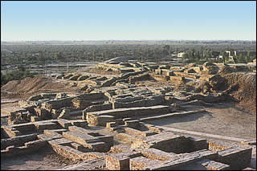

How do we know?
Houses and courtyards shown on plan of Indus Valley city Archaeologists have found the remains of courtyards in many homes in Indus Valley cities. These courtyards may have been used as gathering places, or were simply private outdoor spaces at the centre of a house. |